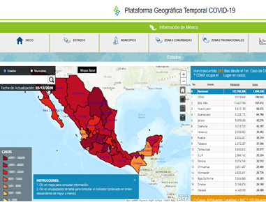
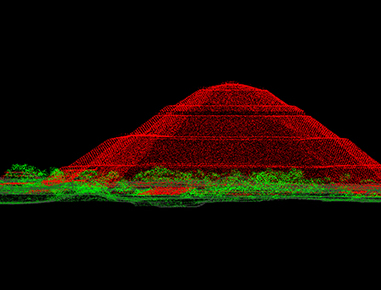
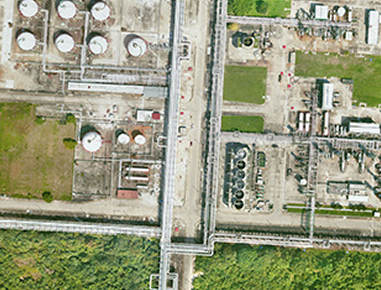
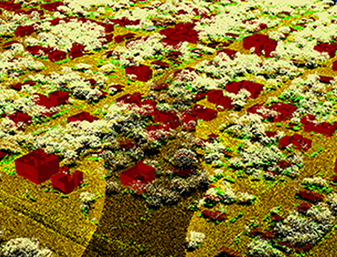
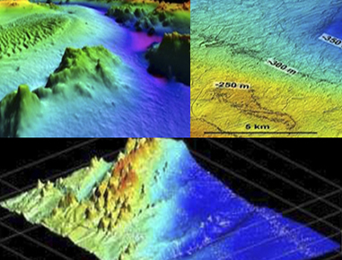
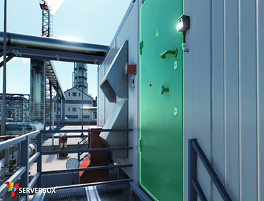

¿QUIÉNES SOMOS?
VISIÓN, MISIÓN Y VALORES
VISIÓN
Ser un Instituto confiable y rentable, referente nacional, en la investigación e innovación de información ambiental y geográfica, con un equipo humano profesional y comprometido, superando las expectativas de nuestros clientes.
MISIÓN
Promover y producir investigación e información geográfica de calidad favoreciendo a un mejor conocimiento de las ciencias ambientales, colaborando en el desarrollo y formación aprofesional, contribuyendo a la solución de necesidades sistemáticas para la conservación y desarrollo del ambiente utilizando tecnología de vanguardia de nuestros clientes.
VALORES
QUIENES SOMOS
Ver MásSERVICIOS Y SOLUCIONES
Las características clave de nuestro trabajo
MAPA MÓVIL VIDEO 360º
En IUCA contamos con la más alta tecnología en cámaras de 360 grados certifi cadas por Google como “preparada para Street View” y Google la reconoce como una de las cámaras más capaces del mercado.
SISTEMA BATIMETRICO MULTIHAZ
Batimetría es el levantamiento del relieve de Superfi cies Subacuáticas, ya estemos hablando del fondo del mar, como recursos de aguas, lagos, embalses.
CAPACITACIÓN OCEANOGRÁFICA, HIDROGRÁFICA Y METEOROLÓGICA
IUCA cuenta con dos embarcaciones para la capacitación e investigación, las cuales son una plataforma importante para el desarrollo de proyectos marinos o costeros.
CARTOGRAFÍA
En IUCA generamos Cartografía digital (Vectorial y Ortofoto) en las siguientes ecalas:
PROYECTOS REALIZADOS
Estos son algunos de nuestros proyectos realizados con éxito.
-

Plataforma Geográfica Temporal COVID-19
Portal de monitoreo de estadísticas mundiales y nacionales de la pandemia.
-

LíDAR
Nube de puntos clasificada (según ASPRS) y en RGB.
-

Ortofoto Digital
Fotografía aérea de una zona o superficie terrestre, en la que todos los elementos presentan la misma escala, libre de errores y deformaciones con la misma validez de plano cartográfico.
-

LiDAR
Cartografía y visualizaciones 3D.
-

Batimetría
Levantamiento del relieve de superficies subacuáticas, como cursos de aguas, lagos, embalses.
-

ServerBox Digital Twin
Motor 3D en tiempo real para implementación de Gemelo Digital.
{kind=link}
{kind=link}
{kind=link}
{kind=link}
{kind=link}
{kind=link}
ALIANZAS ESTRATEGICAS
Contamos con partnerships con ESRI, Microsoft y SAP para impulsar su inversión en los productos de Esri.
En IUCA somos distribuidores oficiales de Environmental Systems Research Institute (Esri) en México.
DISTRIBUIDORES EXCLUSIVOS Y AUTORIZADOS
En IUCA somos distribuidores autorizados de los siguientes proveedores
Contacto
Deja tu mensaje
Contacta con nosotros
Vicente Guerrero # 33 San Carlos El EncinalSantiango Tulantepec, Hgo., CP. 43760
Teléfonos: (775) 1162 454 • 1162 451
info@iuca.info
SÍGUENOS
Síguenos en Nuestras Redes Sociales